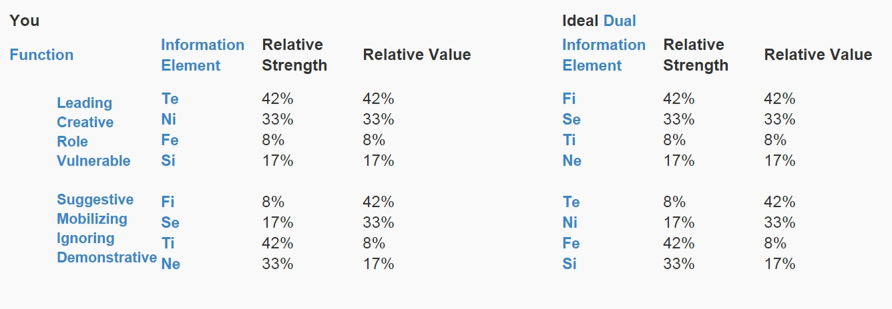
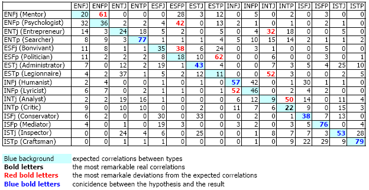
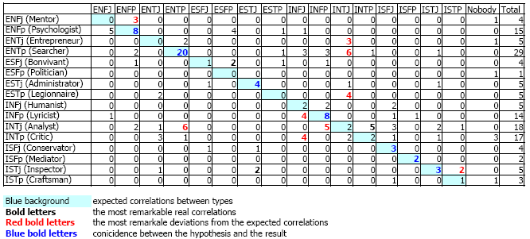

Một test tâm lý khác, cũng là một nhánh xuất phát từ lý thuyết của C.Jungs. http://www.sociotype.com/tests/ - Lưu ý: + Cái này có hệ thống nền khác với MBTI nên kết quả có thể ra khác nhau và về bản chất thì ko thể suy trực tiếp từ một type MBTI ra một type socionic được. + Mặc dù vậy, nếu miễn cưỡng thì EXXX trong MBTI sẽ dẫn tới kết quả EXXX trong socionics nhưng IXXP sẽ dẫn tới IXXP nếu bạn không chắc chắn về cặp N/S và IXXJ nếu bạn không chắc chắn về cặp T/F. Comment kết quả và thảo luận nhé!
Test Results Your Sociotype: LIE-1Te (ENTj)  Nếu như theo bảng này thì nhóm hợp với mình hẳn là ISFP? :-s Thực ra vẫn chưa hiểu lắm ý nghĩa của bảng này, có kha khá số liệu tương đồng..........
Đợi một chút, lát mình về sẽ có bài giải thích về các chỉ số này (nó có ý nghĩa khác với MBTI). Các bạn làm xong thì giữ lại cái bảng như bạn Thuytien đó cho dễ đối chiếu.
Hmmm, như đã hứa. Bản thân mình chưa tìm hiểu sâu về lý thuyết này nên chỉ trình bày những gì mình biết thôi. Nếu có gì mình hiểu sai mong các bạn chỉnh lại cho. Socionics là một lý thuyết phân loại được phát triển từ nền tảng lý thuyết của C.Jungs (nhánh kia là MBTI). Về cơ bản thì socionics dựa trên các psychological functions mà Jungs đặt ra (Jungs không sắp xếp các function này cho các type). Nếu như MBTI gán 4 function cho mỗi type thì socionics sử dụng cả 8 function, và gọi nó là information element (còn function trong socionic mang định nghĩa khác). 8 element đó, theo mình được hiểu, nó khác với MBTI như sau (cho nên nếu kết quả MBTI của bạn ra khác với socionics thì cũng không lạ lắm đâu):
Socionics xếp 8 information element vào các function như sau: Khối Ego: Đại khái là các trạng thái tự nhiên nhất, được sử dụng nhiều nhất của một người, bao gồm: 1. Leading function: Hơi giống với dominant function trong MBTI, một người sử dụng nó một cách tự nhiên, thoải mái và thường xuyên nhất, theo đuổi nó mạnh mẽ nhất khi có lựa chọn, đánh giá các vấn đề, đặt giả định dựa theo nó...Nói tóm lại là nó chi phối hầu như toàn bộ suy nghĩ của người đó. 2. Creative function: Cái này chính là ứng dụng của leading function. Leading function phản ảnh các nhu cầu, sở thích etc của một người, còn function này là công cụ chính để người đó tương tác với xã hội bên ngoài. Nếu là một function hướng ngoại nó sẽ tạo ra bối cảnh để tương tác, còn nếu là function hướng nội thì nó sẽ tạo ra sản phẩm để sử dụng trong tương tác (ví dụ một SEE sẽ dùng Se để giải quyết các vấn đề liên quan đến Fi của người khác). Khối Super Ego: Một người sẽ sử dụng khối Super Ego để phục vụ cho các mục đích được khối Ego đặt ra. Nhưng tâm lý con người không truyền năng lượng qua khối Super Ego để có các kết quả lâu dài, nên nếu bị buộc phải sử dụng thì khối Super Ego này sẽ gây mệt mỏi. Khối này bao gồm: 3. Role function: Khi sử dụng leading function thì role function sẽ "bị đóng". Một người càng sử dụng leading function nhiều thì sẽ càng cảm thấy Role function giống như một điểm yếu của mình vậy. Họ thường cố gắng để hoàn thiện nó để cuộc sống cân bằng hơn, tuy nhiên khi vấn đề đi qua và người đó quay trở lại nhịp sống bình thường với leading function, role function lại bị "bỏ quên". 4. Vulnerable function: Đúng như tên gọi, đây là chức năng dễ bị tổn thương. Element nào có trong chức năng này sẽ tạo ra cảm giác thất vọng, bất an. Người sử dụng không hiểu được tầm quan trọng của element này, thường bỏ qua các thông tin gắn với nó và tìm cách giải quyết bằng cách sử dụng 3 function đầu. Khối Super ID: Khi cảm thấy thiếu thốn điều gì đó trong cuộc sống, một người sẽ sử dụng khối Super ID. Các chức năng trong khối này không phát triển và rất "trẻ con" (child-like). Khối này bao gồm: 5. Suggestive function: Chức năng bổ sung hoàn hảo cho Leading function nên một người sẽ cảm thấy vui vẻ với sự hiện diện của nó. Nếu suggestive function trở nên thiếu hụt, một người sẽ cố tự tạo ra nó cho mình, nhưng người đó sẽ nhanh chóng cảm thấy mệt mỏi. 6. Mobilizing function: Một người sử dụng nó thoải mái hơn suggestive function, nhưng chỉ có giới hạn nào đó. Nếu sử dụng lên một cá nhân khác không coi trọng nó, người đó sẽ phản ứng gay gắt một cách trẻ con. Khối ID: Một người có thể nhận thức được nó dễ dàng, nhưng lại thấy việc sử dụng nó là vô nghĩa, nên không tập trung vào nó. 7. Ignoring function: Chức năng này đối chọi với leading function, đại diện cho một cách tiếp cận khác và gây ra cảm giác khó chịu. Một người không muốn sử dụng nó. Thường thì thông tin mà leading function tạo ra có liên quan đến ignoring function, nhưng thông tin đó sẽ được mô tả để phù hợp với leading function. Tuy nhiên một người cũng có thể sử dụng ignoring function khi cần thiết. Function này không yếu, khi được sử dụng, nó không gây stress như các function yếu ở khối Super Ego và Super ID, nhưng gây cảm giác nhàm chán và khó chịu. 8. Demonstrative Function: Đây là chức năng được một người sử dụng dễ dàng nhất (chỉ sau leading function). Dù vậy khi tương tác một người thường cố tình đi ngược lại ứng dụng thông thường của nó để nhường chỗ cho creative function. Khi tiếp nhận một thông tin đưa ra từ một người khác sử dụng element giống với element trong Demonstrative function của họ thì họ có xu hướng cho rằng thông tin đó là không đáng để tập trung vào. Tuy nhiên với cá nhân người đó thì chức năng này đóng vai trò quan trọng trong việc nhìn nhận thế giới. Một người cũng sử dụng chức năng này để bảo vệ và trợ lực cho những niềm tin từ vulnerable function.
Về cơ bản do cùng phát triển từ một lý thuyết nền nên vẫn sẽ có một số điểm tương đồng. Nếu nắm được lý thuyết về func của MBTI thì sẽ không quá khó để tiếp thu lý thuyết Socionics :3
Thấy hơi giống với cách giải thích trong MBTI với đủ 8 functions. Như kiểu Anima và Animus, 1 tính cách khác giới ở trong vô thức. Vd bạn là ENTJ nữ thì có animus ISFP, INTP nữ thì có animus ESFJ (đối ngược), INTJ nam thì có anima ESFP... ........................................Confidence..............................................Vulnerable function 1,2...................... inside + outside function 3,4 .......................................................................................inside + outside function 5,6 ......................outside......................................................inside function 7,8 ......................inside........................................................outside Tớ thử giải thích theo nghĩa đen xem: function 1,2: biết rất rõ function 3,4: không biết gì function 5,6: tưởng là biết cái mình không biết function 7,8: biết nhưng không biết cái mình biết hại não quá.
@Thuytien, @indept : Hơi giống thôi. Bởi hai cái này cùng xuất phát từ base theory của Jungs. Nhưng các information element trong socionics được lý giải theo một cách khác (nếu tìm hiểu về function MBTI thì sẽ thấy cách socionics lý giải nhiều function khác, thậm chí khác hẳn MBTI). Thêm vào đó, thì MBTI dựa trên 4 cặp preferences, diễn tả cách một người nhận thức thế giới và đưa ra quyết định. Nhưng ở socionics thì ko có 4 cặp preferences đó, và mục đích của nó là diễn tả cách một người xử lý thông tin và tương tác với người khác. Nên định nghĩa type dựa trên cái base đó hẳn nhiên là không giống hệt MBTI. Napoleon chẳng hạn, là ENTJ trong MBTI nhưng lại là SEE (ESFp) trong socionics. Cái bảng này là kết quả của một cuộc khảo sát 108 socionists. Họ được đọc mô tả 16 type MBTI và nhận được yêu cầu là "tìm ra type MBTI có nhiều đặc điểm tương đồng nhất với một type socionic". Và đây là kết quả (nền xanh là type được viết giống type MBTI, màu đỏ bôi đậm là độ chênh lớn với cái nền xanh, màu xanh đậm là trùng khớp với cái nền xanh, đen đậm là nhiều điểm tương đồng nhất).  Sau đó các socionist này được phân loại MBTI type, và kết quả như sau: 
@cercavie01 ý của cả đoạn trên trên của t chỉ có ý là "dễ tiếp thu" thôi :3 Đọc 8 socionics thì có cảm giác MBTI là kiểu: TGiới bên ngoài ----------> MBTI ----------> TG bên ngoài còn Socionics: TGiới bên ngoài ((((--> Socionics -->)))) TGiới bên ngoài. Không biết diễn tả như thế nào nhưng cảm giác nó không triệt để như MBTI ấy, mang tính cá nhân hơn.